Leer en dos minutos
Titular, tres bloques y una tabla: lo esencial cabe en una pantalla.
Documentos para el equipo comercial: one-pagers por solución y alianza, y el brochure de TalentMap 5D. Todos con la misma retícula y una jerarquía pensada para que un gerente entienda la propuesta en dos minutos.
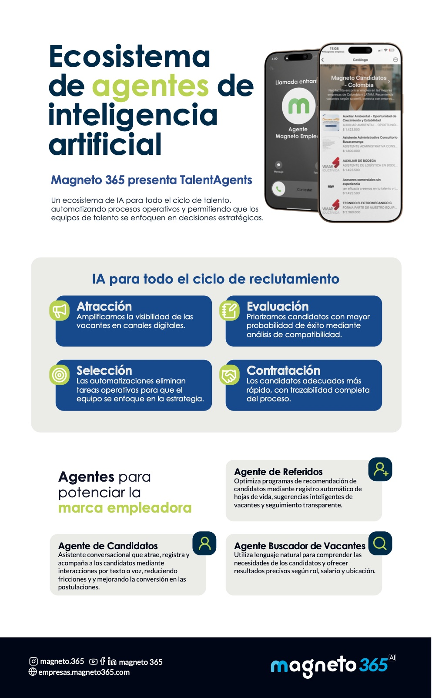
Diseñé y diagramé cada documento para que respondiera las mismas tres preguntas: qué problema resuelve, cómo funciona y qué impacto tiene. Comparten retícula, pie de marca y bloques de color, así el equipo comercial puede armar un paquete coherente con cualquier combinación de documentos.
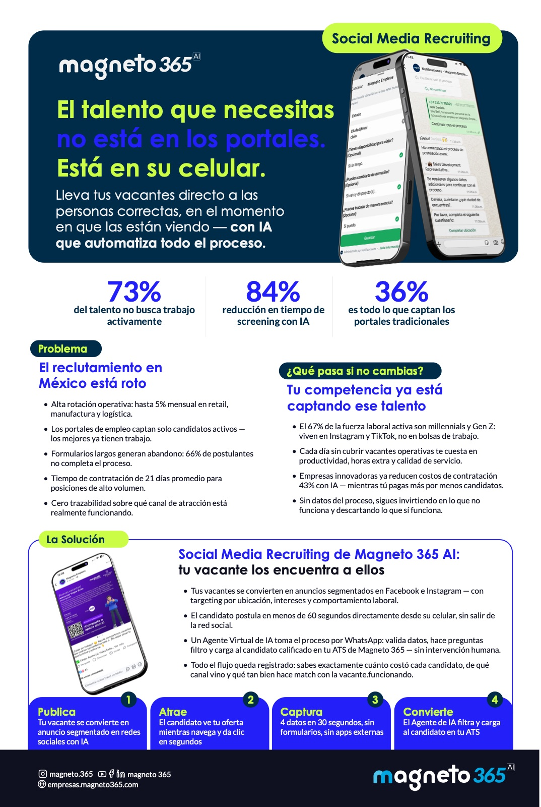
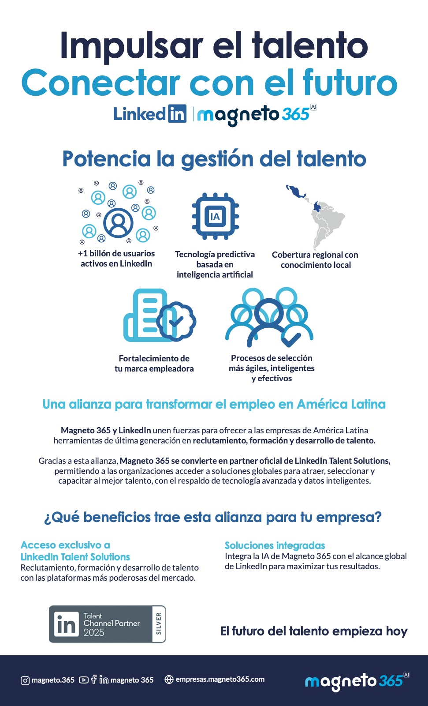
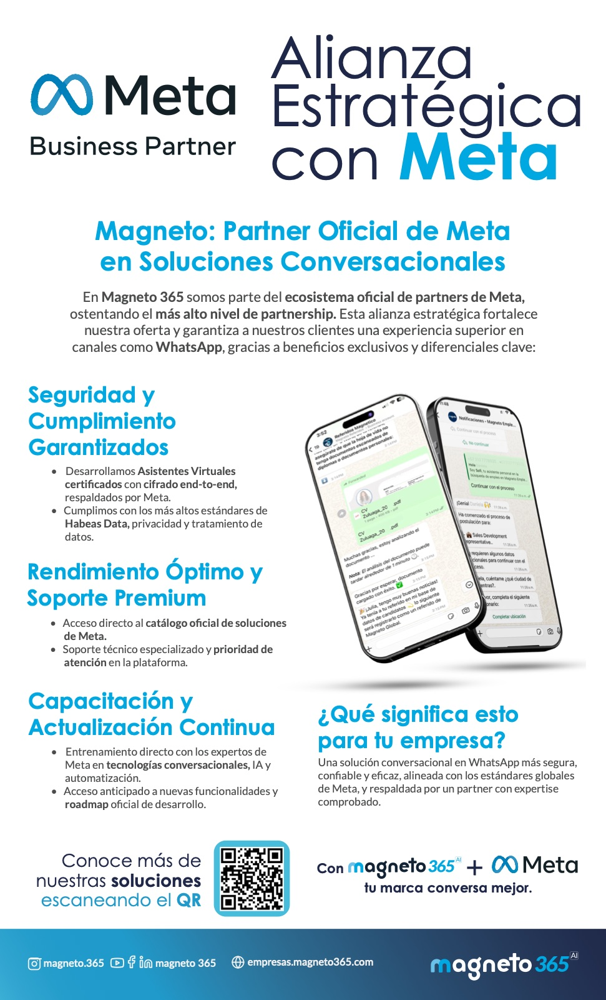
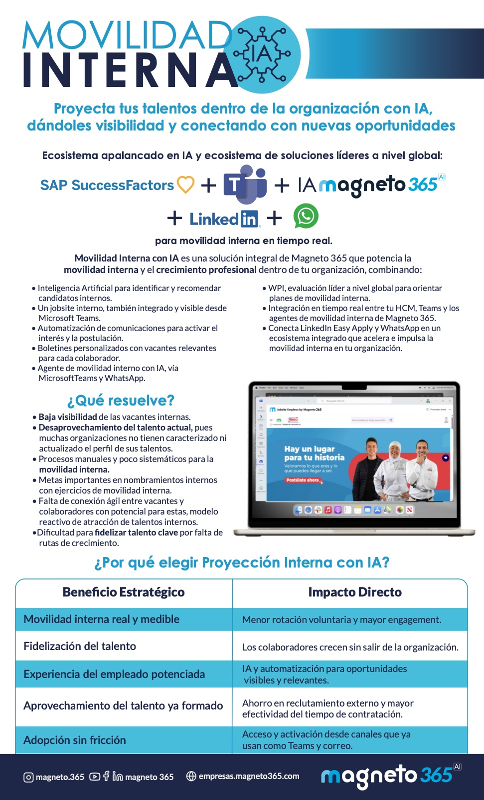
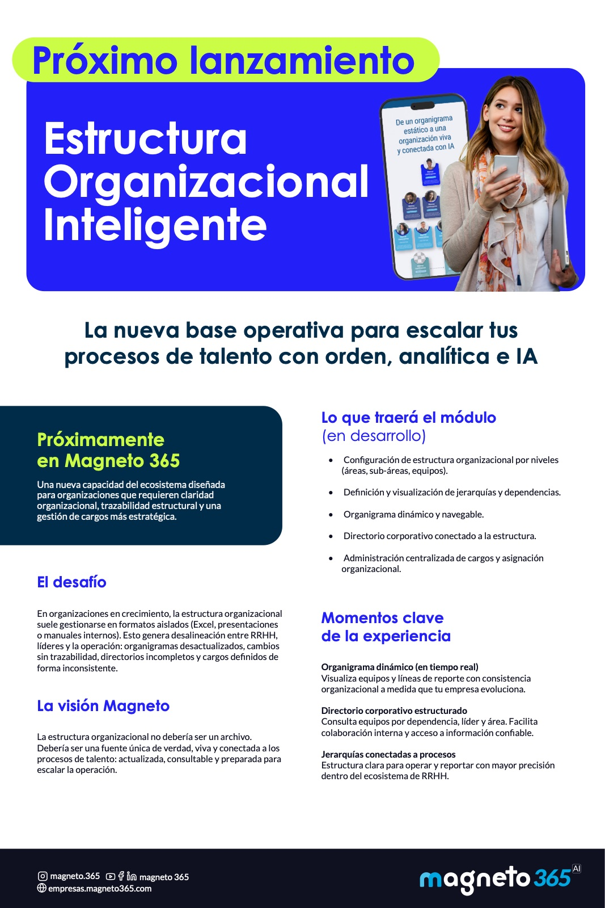
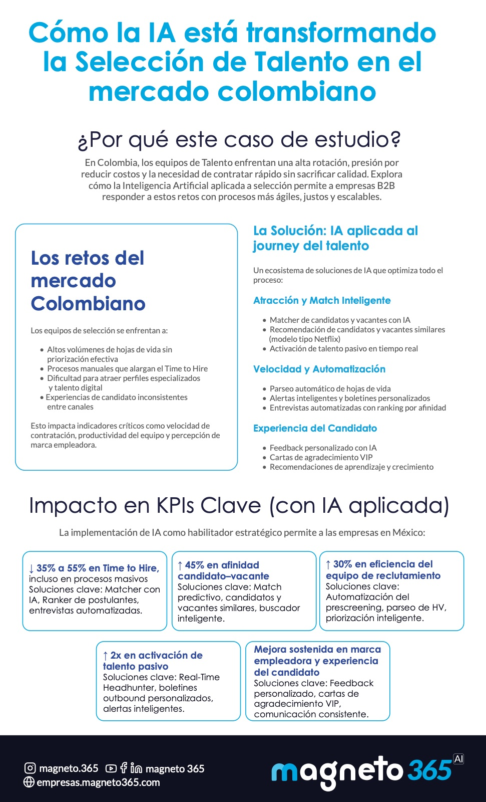
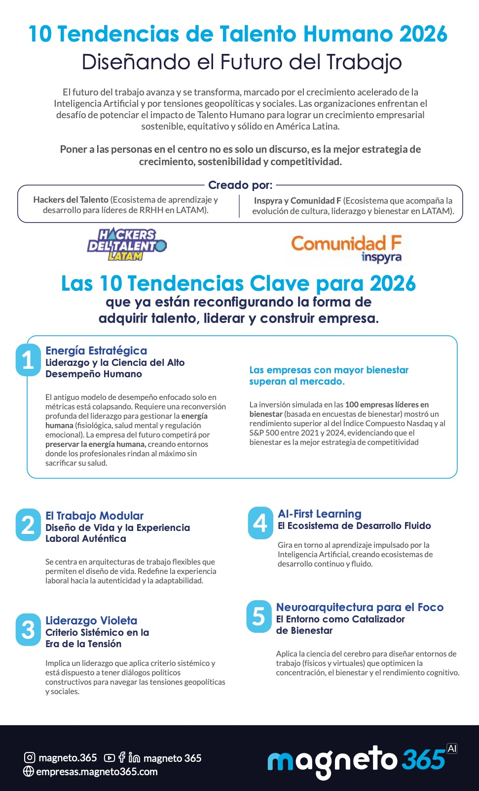
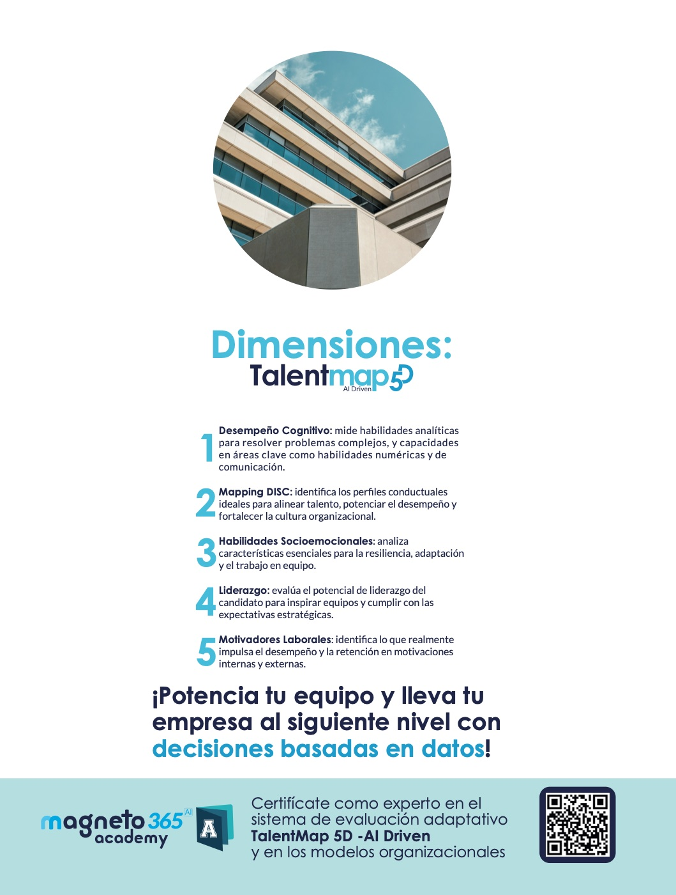
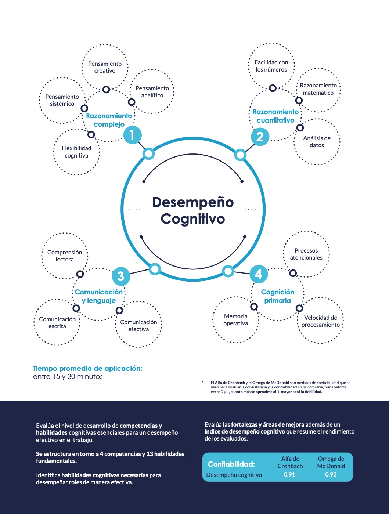
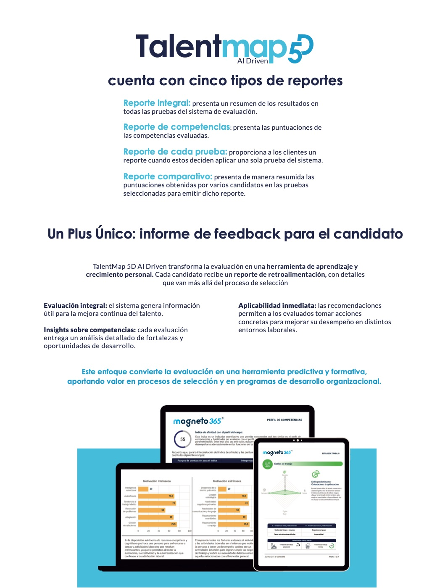
Titular, tres bloques y una tabla: lo esencial cabe en una pantalla.
Diseñé los diagramas circulares de TalentMap: cada dimensión se explica con la misma figura, no con párrafos.
Beneficio contra impacto, antes contra después: las comparaciones van en tabla para leerlas de un vistazo.